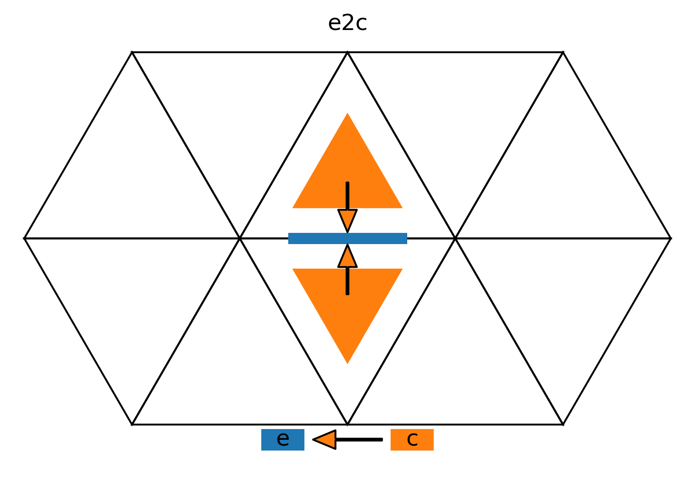

Dycore numerical documentation (solve nonhydro)
This page documents the “solve-nonhydro” part of the dycore.
- SolveNonhydro.run_predictor_step(diagnostic_state_nh: DiagnosticStateNonHydro, prognostic_states: TimeStepPair[PrognosticState], z_fields: IntermediateFields, dtime: float, at_initial_timestep: bool, at_first_substep: bool)
self._predictor_stencils_2_3- Outputs
- \(\color{grey}{\scriptstyle{\texttt{self.}}}\)z_exner_ex_pr:
Field[Dims[Cell, K], float] - \[\begin{split} & \exnerprime{\ntilde}{\c}{\k} = (1 + \WtimeExner) \exnerprime{\n}{\c}{\k} - \WtimeExner\,\exnerprime{\n-1}{\c}{\k}, \k \in [0, \nlev) \\[3pt] & \exnerprime{\ntilde}{\c}{\nlev} = 0 \end{split}\]Compute the temporal extrapolation of perturbed exner function using the time backward scheme (see the ICON_Tutorial page 74). This variable has nlev+1 levels even though it is defined on full levels.
- \(\color{grey}{\scriptstyle{\texttt{self.}}}\)z_exner_ex_pr:
- \(\color{grey}{\scriptstyle{\texttt{diagnostic_state_nh.}}}\)exner_pr:
Field[Dims[Cell, K], float] - \[ \exnerprime{\n-1}{\c}{\k} = \exnerprime{\ntilde}{\c}{\k} \]Store the perturbed exner function from the previous time step.
- \(\color{grey}{\scriptstyle{\texttt{diagnostic_state_nh.}}}\)exner_pr:
Inputs
\(\WtimeExner\) \(\rightarrow\) \(\color{grey}{\scriptstyle{\texttt{self._metric_state_nonhydro.}}}\)exner_exfac:
Field[Dims[Cell, K], float]\(\exnerprime{\n}{\c}{\k}\) \(\rightarrow\) \(\color{grey}{\scriptstyle{\texttt{prognostic_states.current.}}}\)exner:
Field[Dims[Cell, K], float]- \(\color{grey}{\scriptstyle{\texttt{self._metric_state_nonhydro.}}}\)exner_ref_mc:Field[Dims[Cell, K], float]\(\exnerprime{\n-1}{\c}{\k}\) \(\rightarrow\) \(\color{grey}{\scriptstyle{\texttt{diagnostic_state_nh.}}}\)exner_pr:
Field[Dims[Cell, K], float]
Source code
self._predictor_stencils_2_3( exner_exfac=self._metric_state_nonhydro.exner_exfac, exner=prognostic_states.current.exner, exner_ref_mc=self._metric_state_nonhydro.exner_ref_mc, exner_pr=diagnostic_state_nh.exner_pr, z_exner_ex_pr=self.z_exner_ex_pr, horizontal_start=self._start_cell_lateral_boundary_level_3, horizontal_end=self._end_cell_halo, vertical_start=0, vertical_end=self._grid.num_levels + 1, offset_provider={}, )
self._predictor_stencils_4_5_6- Outputs
- \(\color{grey}{\scriptstyle{\texttt{self.}}}\)z_exner_ic:
Field[Dims[Cell, K], float] - \[\begin{split} & \exnerprime{\ntilde}{\c}{\k-1/2} = \Wlev\,\exnerprime{\ntilde}{\c}{\k} + (1 - \Wlev) \exnerprime{\ntilde}{\c}{\k-1}, \quad \k \in [\max(1,\nflatlev), \nlev) \\[3pt] & \exnerprime{\ntilde}{\c}{\nlev-1/2} = \sum_{\k=\nlev-1}^{\nlev-3} \Wlev_{\k} \exnerprime{\ntilde}{\c}{\k} \end{split}\]Interpolate the perturbation exner from full to half levels. The ground level is based on quadratic extrapolation (with hydrostatic assumption?).
- \(\color{grey}{\scriptstyle{\texttt{self.}}}\)z_exner_ic:
- \(\color{grey}{\scriptstyle{\texttt{self.}}}\)z_dexner_dz_c_1:
Field[Dims[Cell, K], float] - \[ \exnerprimedz{\ntilde}{\c}{\k} \approx \frac{\exnerprime{\ntilde}{\c}{\k-1/2} - \exnerprime{\ntilde}{\c}{\k+1/2}}{\Dz{\k}}, \quad \k \in [\max(1,\nflatlev), \nlev] \]Use the interpolated values to compute the vertical derivative of perturbation exner at full levels.
- \(\color{grey}{\scriptstyle{\texttt{self.}}}\)z_dexner_dz_c_1:
Inputs
\(\Wlev\) \(\rightarrow\) \(\color{grey}{\scriptstyle{\texttt{self._metric_state_nonhydro.}}}\)wgtfac_c:
Field[Dims[Cell, K], float]\(\Wlev_{\k}\) \(\rightarrow\) \(\color{grey}{\scriptstyle{\texttt{self._metric_state_nonhydro.}}}\)wgtfacq_c:
Field[Dims[Cell, K], float]\(\exnerprime{\ntilde}{\c}{\k}\) \(\rightarrow\) \(\color{grey}{\scriptstyle{\texttt{self.}}}\)z_exner_ex_pr:
Field[Dims[Cell, K], float]\(\exnerprime{\ntilde}{\c}{\k\pm1/2}\) \(\rightarrow\) \(\color{grey}{\scriptstyle{\texttt{self.}}}\)z_exner_ic:
Field[Dims[Cell, K], float]\(1 / \Dz{\k}\) \(\rightarrow\) \(\color{grey}{\scriptstyle{\texttt{self._metric_state_nonhydro.}}}\)inv_ddqz_z_full:
Field[Dims[Cell, K], float]
Source code
self._predictor_stencils_4_5_6( wgtfacq_c_dsl=self._metric_state_nonhydro.wgtfacq_c, z_exner_ex_pr=self.z_exner_ex_pr, z_exner_ic=self.z_exner_ic, wgtfac_c=self._metric_state_nonhydro.wgtfac_c, inv_ddqz_z_full=self._metric_state_nonhydro.inv_ddqz_z_full, z_dexner_dz_c_1=self.z_dexner_dz_c_1, horizontal_start=self._start_cell_lateral_boundary_level_3, horizontal_end=self._end_cell_halo, vertical_start=max(1, self._vertical_params.nflatlev), vertical_end=self._grid.num_levels + 1, offset_provider=self._grid.offset_providers, )
self._compute_approx_of_2nd_vertical_derivative_of_exner- Outputs
- \(\color{grey}{\scriptstyle{\texttt{self.}}}\)z_dexner_dz_c_2:
Field[Dims[Cell, K], float64] - \[\begin{split} & \exnerprimedzz{\ntilde}{\c}{\k} = - \frac{1}{2} \left( (\vpotempprime{\n}{\c}{\k-1/2} - \vpotempprime{\n}{\c}{\k+1/2}) \dexrefdz{\c}{\k} + \vpotempprime{\n}{\c}{\k} \ddexrefdzz{\c}{\k} \right), \quad \k \in [\nflatgradp, \nlev) \\[3pt] & \ddz{\exnerref{}{}} = - \frac{g}{\cpd \vpotempref{}{}} \end{split}\]Compute the second vertical derivative of the perturbed exner function. This uses the hydrostatic approximation (see eqs. 13 and 7,8 in Zangl_2012). Note that the reference state of temperature (eq. 15 in Zangl_2012) is used when computing \(\ddz{\vpotempref{\c}{\k}}\) in \(\ddexrefdzz{\c}{\k}\).
- \(\color{grey}{\scriptstyle{\texttt{self.}}}\)z_dexner_dz_c_2:
Inputs
\(\vpotempprime{\n}{\c}{\k\pm1/2}\) \(\rightarrow\) \(\color{grey}{\scriptstyle{\texttt{self.}}}\)z_theta_v_pr_ic:
Field[Dims[Cell, K], float64]\(\vpotempprime{\n}{\c}{\k}\) \(\rightarrow\) \(\color{grey}{\scriptstyle{\texttt{self.}}}\)z_rth_pr_2:
Field[Dims[Cell, K], float64]\(\dexrefdz{}{}\) \(\rightarrow\) \(\color{grey}{\scriptstyle{\texttt{self._metric_state_nonhydro.}}}\)d2dexdz2_fac1_mc:
Field[Dims[Cell, K], float64]\(\ddexrefdzz{}{}\) \(\rightarrow\) \(\color{grey}{\scriptstyle{\texttt{self._metric_state_nonhydro.}}}\)d2dexdz2_fac2_mc:
Field[Dims[Cell, K], float64]
Source code
self._compute_approx_of_2nd_vertical_derivative_of_exner( z_theta_v_pr_ic=self.z_theta_v_pr_ic, d2dexdz2_fac1_mc=self._metric_state_nonhydro.d2dexdz2_fac1_mc, d2dexdz2_fac2_mc=self._metric_state_nonhydro.d2dexdz2_fac2_mc, z_rth_pr_2=self.z_rth_pr_2, z_dexner_dz_c_2=self.z_dexner_dz_c_2, horizontal_start=self._start_cell_lateral_boundary_level_3, horizontal_end=self._end_cell_halo, vertical_start=self._vertical_params.nflat_gradp, vertical_end=self._grid.num_levels, offset_provider=self._grid.offset_providers, )
self._compute_horizontal_gradient_of_exner_pressure_for_flat_coordinates- Outputs
- \(\color{grey}{\scriptstyle{\texttt{z_fields.}}}\)z_gradh_exner:
Field[Dims[Edge, K], float64] - \[ \exnerprimegradh{\ntilde}{\e}{\k} = \Cgrad \Gradn_{\offProv{e2c}} \exnerprime{\ntilde}{\c}{\k}, \quad \k \in [0, \nflatlev) \]Compute the horizontal gradient (at constant height) of the temporal extrapolation of perturbed exner function on flat levels, unaffected by the terrain following deformation.
- \(\color{grey}{\scriptstyle{\texttt{z_fields.}}}\)z_gradh_exner:
Inputs
\(\exnerprime{\ntilde}{\c}{\k}\) \(\rightarrow\) \(\color{grey}{\scriptstyle{\texttt{self.}}}\)z_exner_ex_pr:
Field[Dims[Cell, K], float64]\(\Cgrad\) \(\rightarrow\) \(\color{grey}{\scriptstyle{\texttt{self._edge_geometry.}}}\)inverse_dual_edge_lengths:
Field[Dims[Edge], float64]
Offset providers
Source code
self._compute_horizontal_gradient_of_exner_pressure_for_flat_coordinates( inv_dual_edge_length=self._edge_geometry.inverse_dual_edge_lengths, z_exner_ex_pr=self.z_exner_ex_pr, z_gradh_exner=z_fields.z_gradh_exner, horizontal_start=self._start_edge_nudging_level_2, horizontal_end=self._end_edge_local, vertical_start=0, vertical_end=self._vertical_params.nflatlev, offset_provider=self._grid.offset_providers, )
self._compute_horizontal_gradient_of_exner_pressure_for_nonflat_coordinates- Outputs
- \(\color{grey}{\scriptstyle{\texttt{z_fields.}}}\)z_gradh_exner:
Field[Dims[Edge, K], float64] - \[\begin{split} & \exnerprimegradh{\ntilde}{\e}{\k} &&= \left.\pdxn{\exnerprime{}{}{}}\right|_{s} - \left.\pdxn{h}\right|_{s}\exnerprimedz{}{}{}\\[3pt] & &&= \Wedge \Gradn_{\offProv{e2c}} \exnerprime{\ntilde}{\c}{\k} - \pdxn{h} \sum_{\offProv{e2c}} \Whor \exnerprimedz{\ntilde}{\c}{\k}, \quad \k \in [\nflatlev, \nflatgradp] \end{split}\]Compute \(\exnerprimegradh{}{}{}\) on non-flat levels, affected by the terrain following deformation, i.e. those levels for which \(\pdxn{h} \neq 0\) (eq. 14 in Zangl_etal_2015 or eq. 5 in Zangl_2012).
- \(\color{grey}{\scriptstyle{\texttt{z_fields.}}}\)z_gradh_exner:
Inputs
\(\exnerprime{\ntilde}{\c}{\k}\) \(\rightarrow\) \(\color{grey}{\scriptstyle{\texttt{self.}}}\)z_exner_ex_pr:
Field[Dims[Cell, K], float64]\(\Wedge\) \(\rightarrow\) \(\color{grey}{\scriptstyle{\texttt{self._edge_geometry.}}}\)inverse_dual_edge_lengths:
Field[Dims[Edge], float64]\(\exnerprimedz{\ntilde}{\c}{\k}\) \(\rightarrow\) \(\color{grey}{\scriptstyle{\texttt{self.}}}\)z_dexner_dz_c_1:
Field[Dims[Cell, K], float64]\(\Whor\) \(\rightarrow\) \(\color{grey}{\scriptstyle{\texttt{self._interpolation_state.}}}\)c_lin_e:
Field[Dims[Edge, E2C], float64]
Offset providers
Source code
self._compute_horizontal_gradient_of_exner_pressure_for_nonflat_coordinates( inv_dual_edge_length=self._edge_geometry.inverse_dual_edge_lengths, z_exner_ex_pr=self.z_exner_ex_pr, ddxn_z_full=self._metric_state_nonhydro.ddxn_z_full, c_lin_e=self._interpolation_state.c_lin_e, z_dexner_dz_c_1=self.z_dexner_dz_c_1, z_gradh_exner=z_fields.z_gradh_exner, horizontal_start=self._start_edge_nudging_level_2, horizontal_end=self._end_edge_local, vertical_start=self._vertical_params.nflatlev, vertical_end=gtx.int32(self._vertical_params.nflat_gradp + 1), offset_provider=self._grid.offset_providers, )
self._compute_horizontal_gradient_of_exner_pressure_for_multiple_levels- Outputs
- \(\color{grey}{\scriptstyle{\texttt{z_fields.}}}\)z_gradh_exner:
Field[Dims[Edge, K], float64] - \[\begin{split} & \exnerprimegradh{\ntilde}{\e}{\k} &&= \Wedge (\exnerprime{*}{\c_1}{} - \exnerprime{*}{\c_0}{}) \\[3pt] & &&= \Wedge \Gradn_{\offProv{e2c}} \left[ \exnerprime{\ntilde}{\c}{\k^*} + \dzgradp \left( \exnerprimedz{\ntilde}{\c}{\k^*} + \dzgradp \exnerprimedzz{\ntilde}{\c}{\k^*} \right) \right], \quad \k \in [\nflatgradp+1, \nlev) \end{split}\]Compute \(\exnerprimegradh{}{}{}\) when the height of neighboring cells is in another level. The usual centered difference approximation is used for the gradient (eq. 6 in Zangl_2012), but instead of cell center values, the exner function is reconstructed using a second order Taylor-series expansion (eq. 8 in Zangl_2012). \(k^*\) is the level index of the neighboring (horizontally, not terrain-following) cell center and \(h^*\) is its height.
- \(\color{grey}{\scriptstyle{\texttt{z_fields.}}}\)z_gradh_exner:
Inputs
\(\exnerprime{\ntilde}{\c}{\k}\) \(\rightarrow\) \(\color{grey}{\scriptstyle{\texttt{self.}}}\)z_exner_ex_pr:
Field[Dims[Cell, K], float64]\(\exnerprimedz{\ntilde}{\c}{\k}\) \(\rightarrow\) \(\color{grey}{\scriptstyle{\texttt{self.}}}\)z_dexner_dz_c_1:
Field[Dims[Cell, K], float64]\(\exnerprimedzz{\ntilde}{\c}{\k}\) \(\rightarrow\) \(\color{grey}{\scriptstyle{\texttt{self.}}}\)z_dexner_dz_c_2:
Field[Dims[Cell, K], float64]\(\Wedge\) \(\rightarrow\) \(\color{grey}{\scriptstyle{\texttt{self._edge_geometry.}}}\)inverse_dual_edge_lengths:
Field[Dims[Edge], float64]\(\dzgradp\) \(\rightarrow\) \(\color{grey}{\scriptstyle{\texttt{self._metric_state_nonhydro.}}}\)zdiff_gradp:
Field[Dims[EC, K], float64]\(\k^*\) \(\rightarrow\) \(\color{grey}{\scriptstyle{\texttt{self._metric_state_nonhydro.}}}\)vertoffset_gradp:
Field[Dims[EC, K], int32]
Offset providers
Source code
self._compute_horizontal_gradient_of_exner_pressure_for_multiple_levels( inv_dual_edge_length=self._edge_geometry.inverse_dual_edge_lengths, z_exner_ex_pr=self.z_exner_ex_pr, zdiff_gradp=self._metric_state_nonhydro.zdiff_gradp, ikoffset=self._metric_state_nonhydro.vertoffset_gradp, z_dexner_dz_c_1=self.z_dexner_dz_c_1, z_dexner_dz_c_2=self.z_dexner_dz_c_2, z_gradh_exner=z_fields.z_gradh_exner, horizontal_start=self._start_edge_nudging_level_2, horizontal_end=self._end_edge_local, vertical_start=gtx.int32(self._vertical_params.nflat_gradp + 1), vertical_end=self._grid.num_levels, offset_provider=self._grid.offset_providers, )
self._compute_hydrostatic_correction_term- Outputs
- \(\color{grey}{\scriptstyle{\texttt{self.}}}\)z_hydro_corr:
Field[Dims[Edge, K], float64] - \[ \exnhydrocorr{\e} = \frac{g}{\cpd} \Wedge 4 \frac{ \vpotemp{}{\c_1}{\k} - \vpotemp{}{\c_0}{\k} }{ (\vpotemp{}{\c_1}{\k} + \vpotemp{}{\c_0}{\k})^2 }, \]with\[ \vpotemp{}{\c_i}{\k} = \vpotemp{}{\c_i}{\k^*} + \dzgradp \frac{\vpotemp{}{\c_i}{\k^*-1/2} - \vpotemp{}{\c_i}{\k^*+1/2}}{\Dz{\k^*}} \]Compute the hydrostatically approximated correction term that replaces the downward extrapolation (last term in eq. 10 in Zangl_2012). This is only computed for the bottom-most level because all edges which have a neighboring cell center inside terrain beyond a certain limit use the same correction term at \(k^*\) level in eq. 10 in Zangl_2012 (see also the last paragraph on page 3724 for the discussion). \(\c_i\) are the indexes of the adjacent cell centers using \(\offProv{e2c}\); \(k^*\) is the level index of the neighboring (horizontally, not terrain-following) cell center and \(h^*\) is its height.
- \(\color{grey}{\scriptstyle{\texttt{self.}}}\)z_hydro_corr:
Inputs
\(\vpotemp{}{\c}{\k}\) \(\rightarrow\) \(\color{grey}{\scriptstyle{\texttt{prognostic_states.current.}}}\)theta_v:
Field[Dims[Cell, K], float64]\(\vpotemp{}{\c}{\k\pm1/2}\) \(\rightarrow\) \(\color{grey}{\scriptstyle{\texttt{diagnostic_state_nh.}}}\)theta_v_ic:
Field[Dims[Cell, K], float64]\(\frac{g}{\cpd}\) \(\rightarrow\) \(\color{grey}{\scriptstyle{\texttt{self._params.}}}\)grav_o_cpd:
float64\(\Wedge\) \(\rightarrow\) \(\color{grey}{\scriptstyle{\texttt{self._edge_geometry.}}}\)inverse_dual_edge_lengths:
Field[Dims[Edge], float64]\(1 / \Dz{\k}\) \(\rightarrow\) \(\color{grey}{\scriptstyle{\texttt{self._metric_state_nonhydro.}}}\)inv_ddqz_z_full:
Field[Dims[Cell, K], float64]\(\dzgradp\) \(\rightarrow\) \(\color{grey}{\scriptstyle{\texttt{self._metric_state_nonhydro.}}}\)zdiff_gradp:
Field[Dims[EC, K], float64]\(\k^*\) \(\rightarrow\) \(\color{grey}{\scriptstyle{\texttt{self._metric_state_nonhydro.}}}\)vertoffset_gradp:
Field[Dims[EC, K], int32]
Offset providers
Source code
self._compute_hydrostatic_correction_term( theta_v=prognostic_states.current.theta_v, ikoffset=self._metric_state_nonhydro.vertoffset_gradp, zdiff_gradp=self._metric_state_nonhydro.zdiff_gradp, theta_v_ic=diagnostic_state_nh.theta_v_ic, inv_ddqz_z_full=self._metric_state_nonhydro.inv_ddqz_z_full, inv_dual_edge_length=self._edge_geometry.inverse_dual_edge_lengths, z_hydro_corr=self.z_hydro_corr, grav_o_cpd=self._params.grav_o_cpd, horizontal_start=self._start_edge_nudging_level_2, horizontal_end=self._end_edge_local, vertical_start=self._grid.num_levels - 1, vertical_end=self._grid.num_levels, offset_provider=self._grid.offset_providers, )
self._apply_hydrostatic_correction_to_horizontal_gradient_of_exner_pressure- Outputs
- \(\color{grey}{\scriptstyle{\texttt{z_fields.}}}\)z_gradh_exner:
Field[Dims[Edge, K], float64] - \[ \exnerprimegradh{\ntilde}{\e}{\k} = \exnerprimegradh{\ntilde}{\e}{\k} + \exnhydrocorr{\e} (h_k - h_{k^*}), \quad \e \in \IDXpg \]Apply the hydrostatic correction term to the horizontal gradient (at constant height) of the temporal extrapolation of perturbed exner function (eq. 10 in Zangl_2012). This is only applied to edges for which the adjacent cell center (horizontally, not terrain-following) would be underground, i.e. edges in the \(\IDXpg\) set.
- \(\color{grey}{\scriptstyle{\texttt{z_fields.}}}\)z_gradh_exner:
Inputs
\(\exnerprimegradh{\ntilde}{\e}{\k}\) \(\rightarrow\) \(\color{grey}{\scriptstyle{\texttt{z_fields.}}}\)z_gradh_exner:
Field[Dims[Edge, K], float64]\(\exnhydrocorr{\e}\) \(\rightarrow\) hydro_corr_horizontal:
Field[Dims[Edge], float64]\((h_k - h_{k^*})\) \(\rightarrow\) \(\color{grey}{\scriptstyle{\texttt{self._metric_state_nonhydro.}}}\)pg_exdist:
Field[Dims[Edge, K], float64]\(\IDXpg\) \(\rightarrow\) \(\color{grey}{\scriptstyle{\texttt{self._metric_state_nonhydro.}}}\)ipeidx_dsl:
Field[Dims[Edge, K], bool]
Source code
self._apply_hydrostatic_correction_to_horizontal_gradient_of_exner_pressure( ipeidx_dsl=self._metric_state_nonhydro.ipeidx_dsl, pg_exdist=self._metric_state_nonhydro.pg_exdist, z_hydro_corr=hydro_corr_horizontal, z_gradh_exner=z_fields.z_gradh_exner, horizontal_start=self._start_edge_nudging_level_2, horizontal_end=self._end_edge_end, vertical_start=0, vertical_end=self._grid.num_levels, offset_provider={}, )
self._add_temporal_tendencies_to_vn- Outputs
- \(\color{grey}{\scriptstyle{\texttt{prognostic_states.next.}}}\)vn:
Field[Dims[Edge, K], float64] - \[ \vn{\n+1^*}{\e}{\k} = \vn{\n}{\e}{\k} - \Dt \left( \advvn{\n}{\e}{\k} + \cpd \vpotemp{\n}{\e}{\k} \exnerprimegradh{\ntilde}{\e}{\k} \right) \]Update the normal wind speed with the advection and pressure gradient terms.
- \(\color{grey}{\scriptstyle{\texttt{prognostic_states.next.}}}\)vn:
Inputs
\(\vn{\n}{\e}{\k}\) \(\rightarrow\) \(\color{grey}{\scriptstyle{\texttt{prognostic_states.next.}}}\)vn:
Field[Dims[Edge, K], float64]\(\Dt\) \(\rightarrow\) dtime:
float64\(\advvn{\n}{\e}{\k}\) \(\rightarrow\) ddt_vn_apc_pc[self.ntl1]
\(\vpotemp{\n}{\e}{\k}\) \(\rightarrow\) \(\color{grey}{\scriptstyle{\texttt{z_fields.}}}\)z_theta_v_e:
Field[Dims[Edge, K], float64]\(\exnerprimegradh{\ntilde}{\e}{\k}\) \(\rightarrow\) \(\color{grey}{\scriptstyle{\texttt{z_fields.}}}\)z_gradh_exner:
Field[Dims[Edge, K], float64]\(\cpd\) \(\rightarrow\) \(\color{grey}{\scriptstyle{\texttt{constants.}}}\)CPD:
float64
Source code
self._add_temporal_tendencies_to_vn( vn_nnow=prognostic_states.current.vn, ddt_vn_apc_ntl1=diagnostic_state_nh.ddt_vn_apc_pc.predictor, ddt_vn_phy=diagnostic_state_nh.ddt_vn_phy, z_theta_v_e=z_fields.z_theta_v_e, z_gradh_exner=z_fields.z_gradh_exner, vn_nnew=prognostic_states.next.vn, dtime=dtime, cpd=constants.CPD, horizontal_start=self._start_edge_nudging_level_2, horizontal_end=self._end_edge_local, vertical_start=0, vertical_end=self._grid.num_levels, offset_provider={}, )